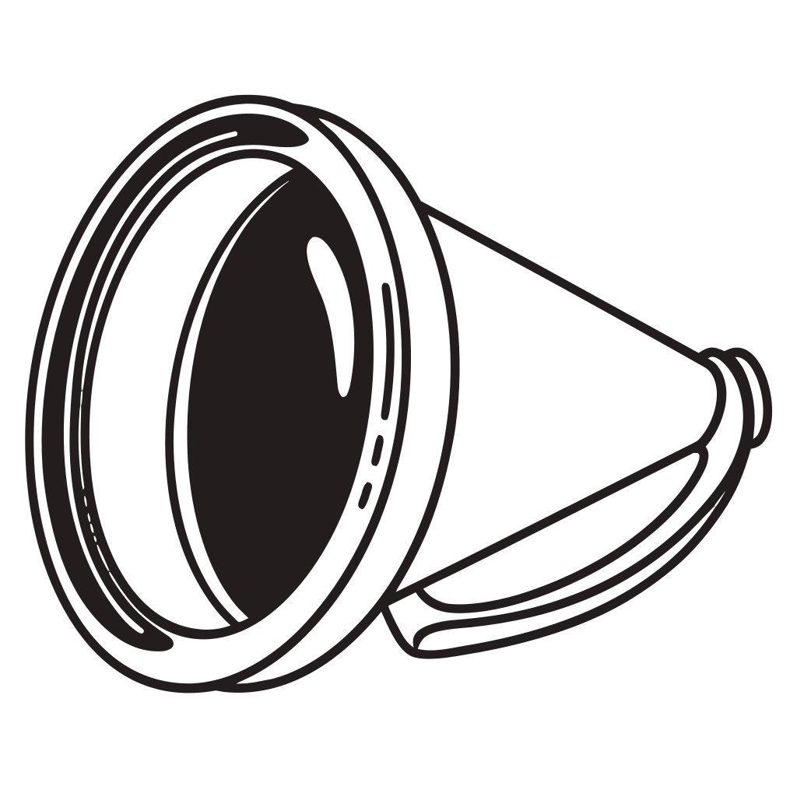
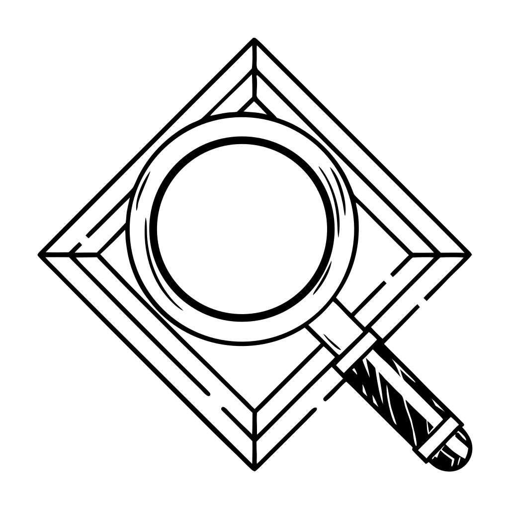
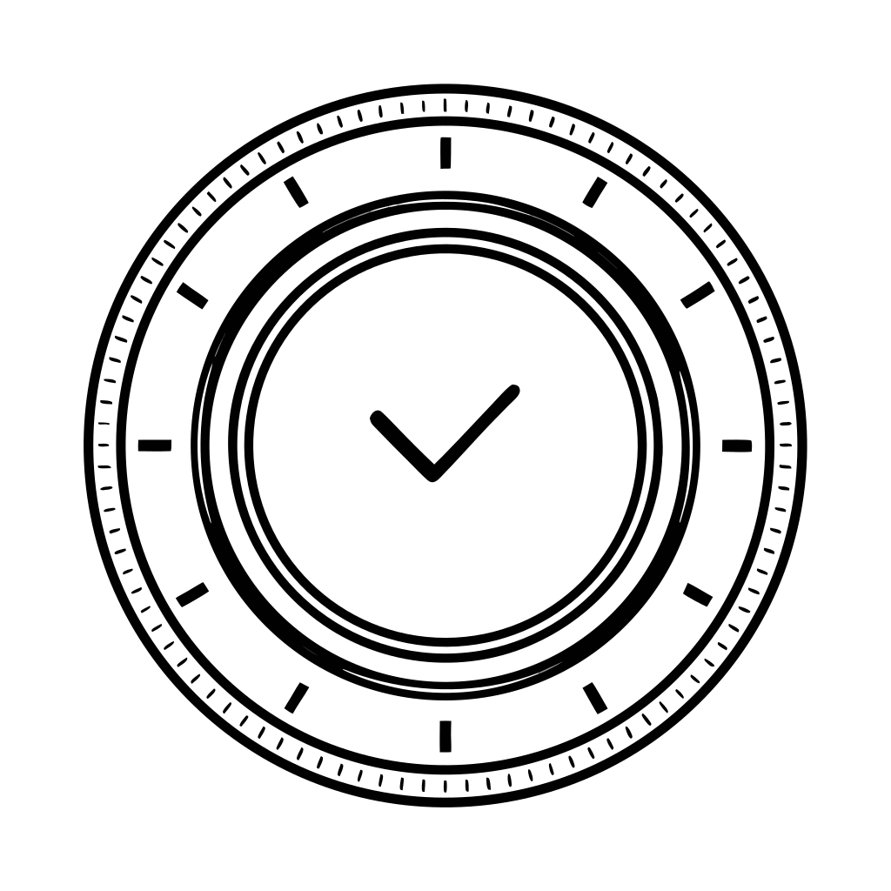

00_handgezeichnet
handgezeichnet · 1 kB · 69 Segmente

128 px48 px
24 px
16 px
Dieselbe Datei in vier Größen. 16 px ist die Favicon-Größe und der eigentliche Test: Was dort zu Matsch wird, taugt nicht als Marke. Hintergrund ist das Graphit der Anwendung.
handgezeichnet · 1 kB · 69 Segmente

128 pxReplicate, nachgezeichnet · 13 kB · 494 Segmente

128 pxReplicate, nachgezeichnet · 19 kB · 692 Segmente

128 pxReplicate, nachgezeichnet · 46 kB · 1405 Segmente
Replicate, nachgezeichnet · 39 kB · 2172 Segmente

128 px